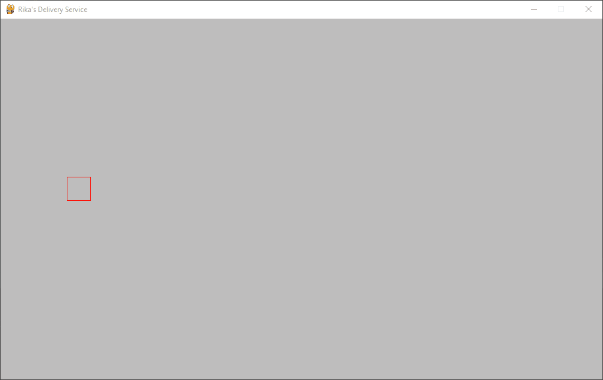

Thank you everyone for being so patient with updates and big thanks to those that contributed to the Kickstarter. Rika's Delivery Service is coming along great. As you can see, the player movement has been implamented. She can move left, and also, she can move right, as most witches can. Right now she is a red box but that will soon be updated.
